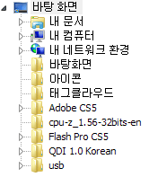

IKEP4.0 WORKFLOW
t_close
레프트메뉴
Process Tree
Partition

컨텐츠영역
Process A1
Process A2
Process A3
추가
저장
배치
배치해제
상태
버전1.0
(기본)
최종저장일시
2011.03.22 00:00:00
배치여부
프로세스가 선택되지 않았습니다.
프로세스 트리에서 프로세스를 선택하거나 신규 프로세스를
추가
하세요.
프로세스 정보영역
Process
add
Tab A1
Tab A2
Tab A3
INPUT
OUTPUT
id
variable
arrangement
유형
in
out
Variable1
변수 1
FALSE
STRING
Variable1
변수 1
FALSE
STRING
Variable1
변수 1
FALSE
STRING
Variable1
변수 1
FALSE
STRING
Partition 아이디
Partition 명
Partition 설명
확인
취소